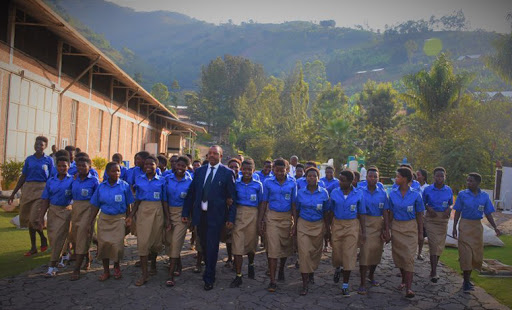
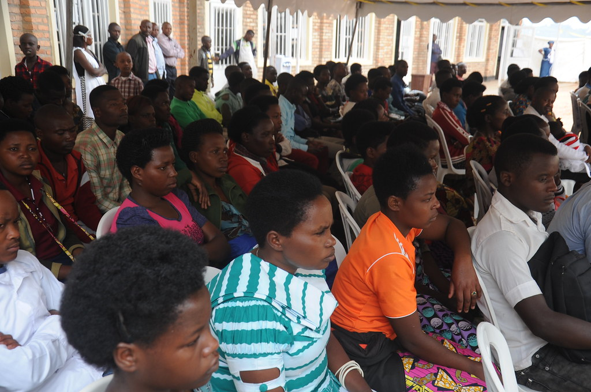
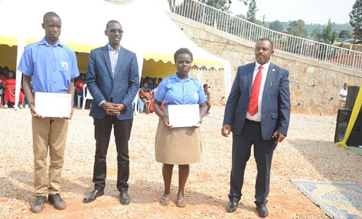
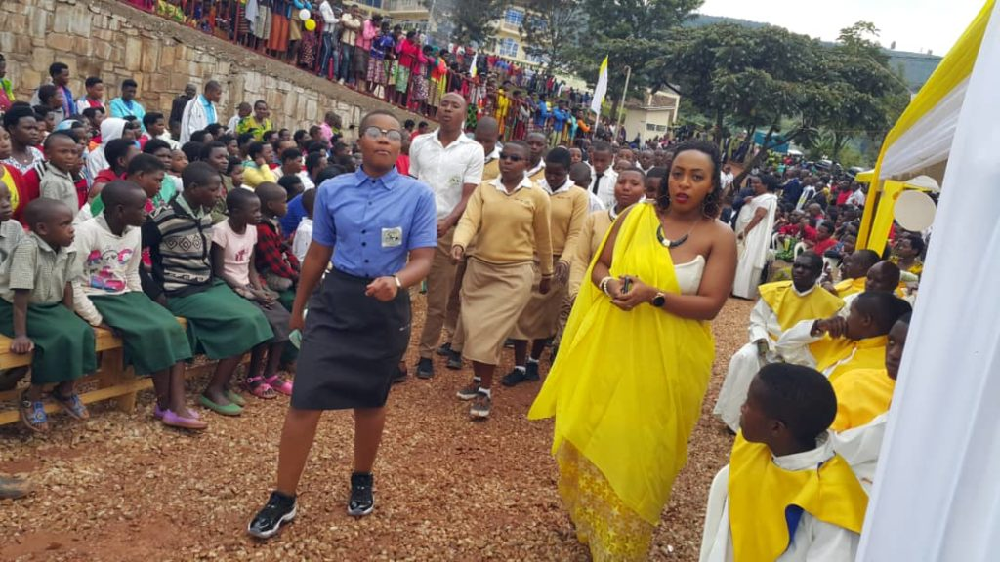
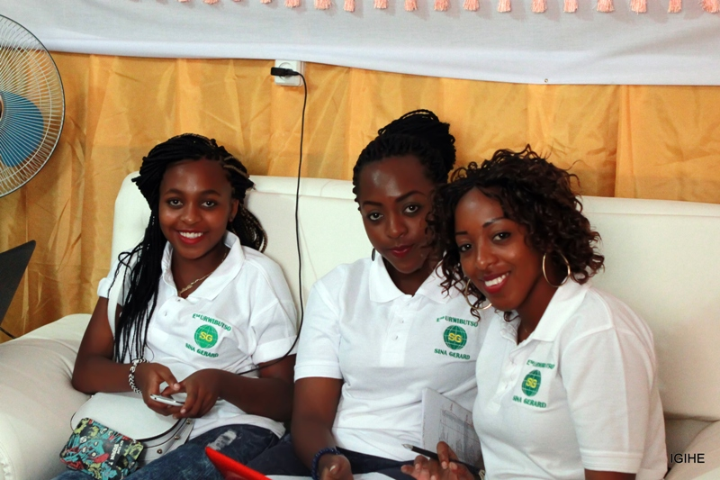
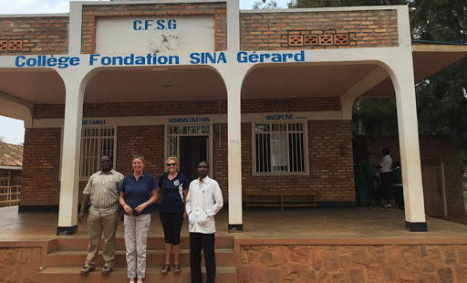

Amafoto agaragaza abanyeshuri basoje amasomo y'ubumenyingiro muri College Fondation Sina Gerard 2019.

Uwize muri “Collège Fondation SINA Gérard (C.F.S.G)” ntagorwa n’ikizamini

Rulindo: “Fondation Sina Gerard Nyirangarama” yatashye Chapelle ku mugaragaro !!

Abiga muri College Foundation Sina Gerard batozwa kutazabunza amabaruwa asaba akazi.
